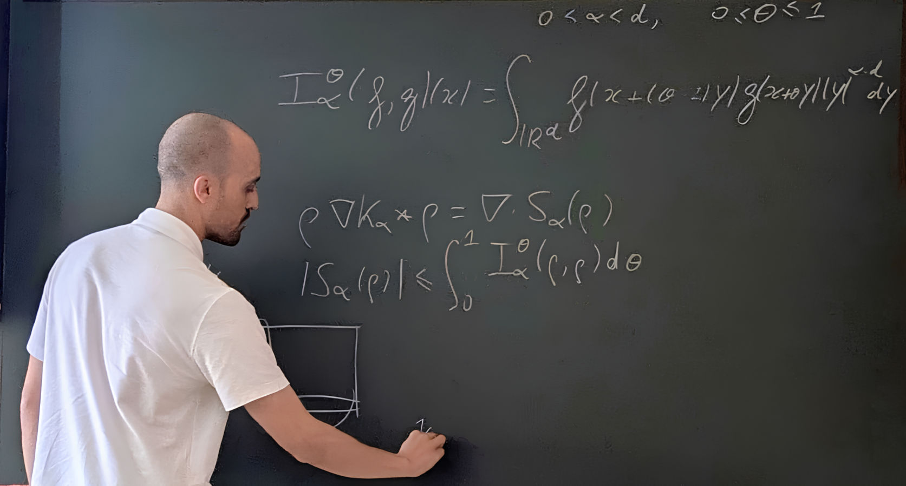

nuno.januario.alves@univie.ac.at
| 2023 - now | Postdoc in the SFB Project F65 University of Vienna, Austria Mentor: Peter Markowich |
| 2023 | Ph.D. in Applied Mathematics and Computational Sciences King Abdullah University of Science and Technology, Saudi Arabia Advisor: Athanasios E. Tzavaras |
| 2017 | M.Sc. in Mathematics and Applications Instituto Superior Técnico, Lisbon, Portugal Advisor: Maria Vaz Pinto |
| 2015 | B.Sc. in Applied Mathematics and Computation Instituto Superior Técnico, Lisbon, Portugal |